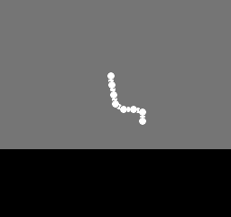

This is a guide for writing high-performance code using the NESFab programming language.
The NES lacks profiling tools, but there are other ways to identify bottlenecks.
First off, a visual depiction of performance can be achieved using PPUMASK writes. Before executing the code you'd like to benchmark, enable the grayscale bit of PPUMASK, and only turn it off when the code has finished running. This will mark scanlines on the screen for the duration.
// Visual benchmark:
{PPUMASK}(PPUMASK_ON | PPUMASK_GRAYSCALE)
fence // It's a good idea to put fences around your code to be benchmarked.
my_code_to_benchmark()
fence
{PPUMASK}(PPUMASK_ON)
The result will look like this:
As you can see, this code is using about 2/3rds of the frame.
Alternatively, code can be benchmarked using emulator breakpoints.
To do so, insert a few hardware writes to some unused address (like $4444):
// Breakpoint benchmark:
{$4444}(0)
fence // It's a good idea to put fences around your code to be benchmarked.
my_code_to_benchmark()
fence
{$4444}(1)
Then, in your emulator, set a breakpoint to break on writes to that address. By resuming execution after the first hit, the emulator will show how many cycles have elapsed.
The secret to neat NES effects lies in the power of lookup tables.
Any time you have an expensive computation, your first thought should be if you can implement it using a table, as looking up a value in a table is extremely cheap. Lots of common math operations, such sine, cosine, square root, and log, can be implemented using tables, but you can also combine the result of several operations into tables too.
For example, in the NESFab example "examples/rope", 256-element lookup tables are used to calculate squares, square roots, and inverse square roots efficiently. Likewise, "examples/hang_glider" uses several lookup tables to do various things such as calculate PPUADDRs and implement gameplay.
If there's one thing you should take to heart from this article, it's to use more lookup tables.
Most of the time, if you want to improve performance you should focus on your loops. The best loops are small, simple, and concise, without extra logic, like if-statements.
// This loop will optimize extremely well:
for U i = 0; i < len(array); i += 1
{PPUDATA}(array[i] << 2)
// This loop looks a little worse:
for U i = 0; i < len(array); i += 1
if i < 5
{PPUDATA}(array[i])
else
{PPUDATA}(array[i] + calculate_offset())
Sometimes, a complicated loop can be simplified by splitting it up into multiple loops, and hoisting calculations out of it. For example, the loop shown earlier can be rewritten as follows:
for U i = 0; i < min(5, len(array)); i += 1
{PPUDATA}(array[i])
U offset = calculate_offset() // Note: NESFab might hoist this calculation out automatically.
for U i = 5; i < len(array); i += 1
{PPUDATA}(array[i] + offset)
Of course, there's nothing wrong with complicated loops, just don't expect them to be lightning-fast. Typically, only one or two loops in a program will be the bottleneck, while every other loop can be ignored. You should identify the problematic loops before optimizing them.
The NES is an 8-bit system, meaning it works on a single byte at a time.
Although larger computations can be done, it requires an additional instruction(s) per byte.
For example, when using the 24-bit type UUU in NESFab,
you can expect the performance to be three times as slow as the 8-bit type U.
// This add requires 3 instructions, as the types are 24-bits:
UUU foo = random_uuu()
UUU bar = random_uuu()
UUU qux = foo + bar
Ideally, you should use the smallest possible types for your code, but note that NESFab is very smart at optimizing multi-byte math, and will often reduce the number of instructions needed. For example, in the code below, the compiler will realize that only a single AND instruction is needed for a 24-bit calculation:
UUU foo = rand_uuu()
if foo & 0xF // Only a single AND instruction is needed
// ...
In general, you should use the smallest types possible for global variables, but not worry much about type size otherwise.
For many operations, signed types (like S) and unsigned types (like U), produce identical code.
However, a few operations generate worse code for signed types:
These differences are small and should rarely be a concern. With that said, if you have the choice between an unsigned type and a signed type, you should always prefer the unsigned version.
On the NES, bitwise AND, OR, and XOR have fantastic performance, along with bitwise negation (~).
Addition and subtraction are often as fast, but may be a few cycles slower due to their use of the 6502's carry flag. Still, the performance is fantastic for these two.
Bitwise shifts are where things start to get ugly, because the 6502 can only shift a single position at a time. To shift more than that, multiple instructions will be used:
U foo
foo = rand() >> 1 // This is fast! A single instruction shift!
foo = rand() >> 2 // This is slower. Requires 2 instructions to shift.
foo = rand() >> 4 // This is even worse. Requires 4 instructions to shift.
If that's not bad enough, when shifting by an amount that is not known at compile-time, a loop must be generated.
U foo
foo = 123 >> rand() // This is awful. Converts to a loop.
// The loop looks like this:
foo = 123
U shift = rand()
for U i = 0; i > shift; i += 1
foo >>= 1
As stated in sections above, right-shifts have worse performance for signed types. Thus, right-shifting a type like SSS several positions is going to be very slow!
Regarding NESFab optimizations, the compiler can sometimes rewrite left-shifts to use a lookup table instead of shift operations. Additionally, it will reduce shifts of 8 positions and above on a bytewise level. For example:
UUU foo = rand_uuu()
UUU bar = foo >> 8 // No shift instructions needed! Just reorder the bytes.
UUU qux = foo >> 9 // Reorder the bytes, then do one shift instruction.
The 6502 does not have a multiplication operator (or division) in its hardware. As you might expect, this means that multiplication on the NES is very, very slow.
In NESFab, multiplying by a compile-time constant converts the code into a series of shifts and adds. For example:
U foo = U(rand() * 3)
// The code above will be compiled as:
foo = rand()
foo = (foo << 2) + foo
When multiplying by a compile-time constant, it's best to use values that require very few shifts and adds.
Powers of two are optimal, or values that are the sum or difference of two powers of two (e.g. 3 is 2+1, and 6 is 4+2).
Multiplying by a value like 0.1 is rarely ideal; it's better to multiply by 0.125, which is 2 to the power of -3.
Of course, you can't always multiply by a compile-time constant. To implement multiplication otherwise, the compiler performs long-multiplication using a series of 8-bit multiplies, where each 8-bit multiply is done using an assembly subroutine that takes ~150 cycles. This is very slow, and the performance gets horrendous when multiplying large types.
The only upside to long-multiplication is that the compiler can sometimes optimize parts of it out. For example, if you cast the result to a smaller type, the compiler won't calculate the highest bytes:
UU foo = $1234
UU bar = $5678
UUU qux = UUU(foo * bar) // This is slow.
UU kek = UU(foo * bar) // This is slow, but slightly faster as the result is a smaller type.
In NESFab, arrays and pointers can be accessed using both 8-bit and 16-bit indexing, but only the 8-bit version is fast. Whenever possible, use the 8-bit version, and totally ignore the 16-bit one.
When working with arrays, the general wisdom is to keep their length at 256 elements or less, as then 8-bit indexing can be used everywhere:
U[256] foo // Fast!
U[100] bar // Fast!
U[300] qux // Bad idea; 300 elements is more than 256.
If you do have to use 16-bit indexing, it's best to use the pattern {OFFSET + U(INDEX)}, where OFFSET is a compile-time constant, and INDEX is an 8-bit value. The compiler recognizes this pattern on arrays, and will convert it to equivalent 8-bit code:
U[300] bar
bar{100 + U(index_8_bit)} = 10 // This is fast!
bar{index_16_bit} = 10 // This is slow.
Pointers are a little different, as pointers can be manipulated using pointer arithmetic:
CCC ptr = @my_data
ptr += 10 // Perform pointer arithmetic.
U result = ptr[0] // Index into the pointer.
Ideally, you should use pointer arithmetic to move the pointer within the 256-byte range of what you want to index, then use 8-bit indexing to access the pointed-to values:
CCC ptr = @my_data
while true
U run = ptr[0]
if run == 0
break;
// Use 8-bit indexes for the bulk of the work:
for U i = 1; i < run; i += 1
{PPUDATA}(ptr[i])
// Do pointer arithmetic to adjust the pointer:
ptr += run
If you need a mutable buffer, always prefer TEAs, except if you absolutely require a pointer interface. The reason being, NESFab is better at optimizing TEAs.
vars
U[64] fastest // TEA = good
[64] slower // PAA = not as good
When dereferencing a 3-byte banked pointer (like CCC or MMM),
the compiler inserts bank switching code before the pointer is accessed.
If you continue to use this pointer, the compiler only has to bank switch once.
Problems arise when multiple banked pointers are used. In this situation, the compiler will insert bank switches whenever a different pointer is used:
CCC/my_group foo = @my_data
CCC/my_group bar = @my_other_data
for U i = 0; i != 10; i += 1
array[i] = foo[i] + bar[i] // This is slow! Lots of bank switches!
There are two workarounds for this.
First, you can store some of your data as omni data, letting you use 2-byte non-banked pointers to access it.
2-byte pointers never require bank switching.
Alternatively, bank switching can be avoided if both pointers use the same bank. The compiler can only prove this in limited circumstances, but it is possible if both pointers are derived from the same global data:
data /my_group
[] combined
label my_data
U[10](0,1,2,3,4,5,6,7,8,9)
label my_other_data
U[10](9,8,7,6,5,4,3,2,1,0)
fn example()
CCC/my_group foo = combined.my_data
CCC/my_group bar = combined.my_other_data
for U i = 0; i != 10; i += 1
array[i] = foo[i] + bar[i]
If you want to save these pointers, it's recommended to save them as non-banked pointers. Using casts, one can convert these pointers before use:
vars
U bank
AA foo_addr // Store the addresses without the bank.
AA bar_addr
U[10] array
// Helper functions to cast to proper banked pointers:
fn foo() CCC/my_group
return CCC/my_group(foo_addr, bank)
fn bar() CCC/my_group
return CCC/my_group(bar_addr, bank)
data /my_group
[] combined
label my_data // Use labels to break up our data.
U[10](0,1,2,3,4,5,6,7,8,9)
label my_other_data
U[10](9,8,7,6,5,4,3,2,1,0)
mode main()
foo_addr = AA(combined.my_data.ptr)
bar_addr = AA(combined.my_other_data.ptr)
for U i = 0; i != 10; i += 1
array[i] = foo()[i] + bar()[i]
Although the code above is awkward, it minimizes the number of bank switches.
Additional costs for bank switching can be incurred based on the mapper used. The simplest mappers, like BNROM, have fast bank switches, but others, like MMC1 are sluggish.
In some situations, compiling with the --unsafe-bank-switch option improves bank switching speed.
Normally, NESFab uses bank switching code that is resiliaent to interrupts, but --unsafe-bank-switch disables this feature.
Although that sounds bad, if your code always triggers its interrupts while waiting on an nmi statement,
--unsafe-bank-switch will be perfectly fine.
The +static modifier forces a function to always exist in the 6502's ROM window,
meaning no bank switches are necessary to call it.
This is useful for functions that are called a lot, albeit at the cost of ROM space if the mapper does not use a fixed bank.
The +inline modifier has similar results:
it totally removes the cost of calling the function, but at the cost of ROM space.
Generally, one should not use the +inline modifier, as the compiler will automatically inline small functions without it.